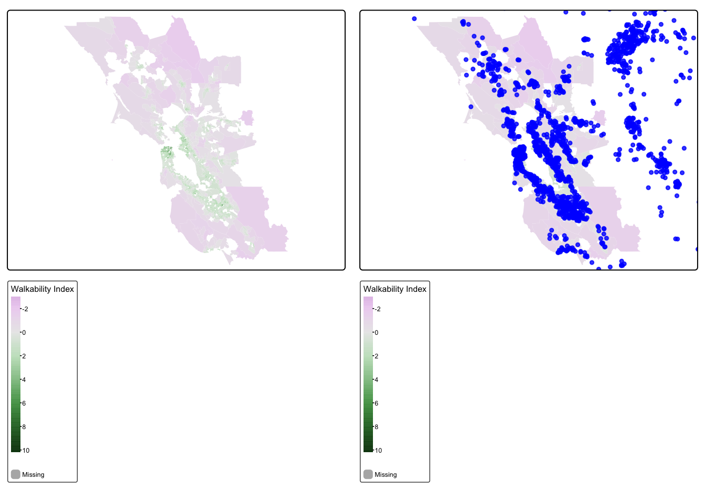
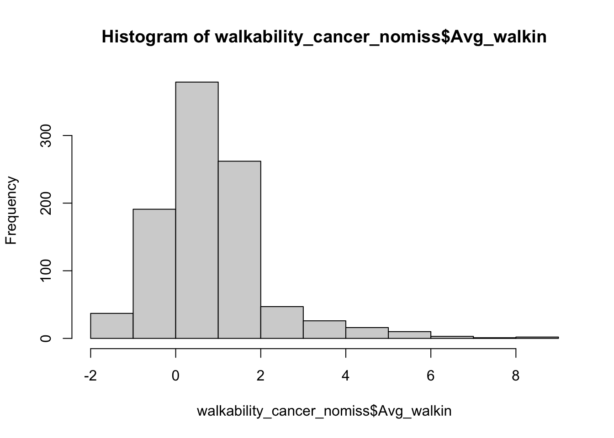

In this lab, we are going to work more with vector data, spatially joining two vector datasets.
The objectives of this guide are to teach you:
Let’s do this!!!
First, let’s install our packages.
library(sf)
library(MapGAM)
library(tidyverse)
library(flextable)
library(RColorBrewer)
library(tmap)
#library(gtools)
#library(gmodels)
In this exercise, we will learn about geospatial analysis with vector data.
We will be using data included in the MapGAM() package. As a reminder: While they are based on real patterns expected in observational epidemiologic studies, these data have been simulated and are for teaching purposes only. The data contain 5000 simulated ovarian cancer cases. While this is a cohort with time to mortality, for the purposes of our class, we will conduct simple tabular analyses looking at associations between different spatial exposures with mortality at end of follow-up.
As another reminder, the CAdata dataset contains the following variables:
We will also read in a dataset with walkability index data from California. This dataset includes administrative boundaries for United States Census tract polygons, along with values for a walkability index for each tract derived from z-scores for population density, business density, and street connectivity.
Next, we want to read in all of our spatial data. First, we read in the CAdata dataset from the MapGAM package, and then convert it to a spatial dataset.
data(CAdata)
ca_pts <- CAdata
ca_proj <- "+proj=lcc +lat_1=40 +lat_2=41.66666666666666
+lat_0=39.33333333333334 +lon_0=-122 +x_0=2000000
+y_0=500000.0000000002 +ellps=GRS80
+datum=NAD83 +units=m +no_defs"
ca_pts <- st_as_sf(CAdata, coords=c("X","Y"), crs=ca_proj)
We then read in the administrative boundaries dataset with the walkability index values for the San Francisco Bay Area. Finally, we check the file to make sure it was read correctly. Does it have a coordinate reference system?
## Reading in the walkability index dataset
url <- "https://github.com/pjames-ucdavis/SPH215/raw/main/BayArea_Walkability_Data.rds"
download.file(url, destfile = "BayArea_Walkability_Data.rds", mode = "wb")
walkability_tracts = readRDS("BayArea_Walkability_Data.rds")
## Is walkability_tracts spatial?
head(walkability_tracts)## Simple feature collection with 6 features and 31 fields
## Geometry type: MULTIPOLYGON
## Dimension: XY
## Bounding box: xmin: -122.2695 ymin: 37.83454 xmax: -122.2124 ymax: 37.88544
## Geodetic CRS: WGS 84
## GEOID FID_1 GISJOIN STATEFP COUNTYFP TRACTCE NAME.x
## 1 06001400100 0 G0600010400100 06 001 400100 4001
## 2 06001400200 1 G0600010400200 06 001 400200 4002
## 3 06001400300 2 G0600010400300 06 001 400300 4003
## 4 06001400400 3 G0600010400400 06 001 400400 4004
## 5 06001400500 4 G0600010400500 06 001 400500 4005
## 6 06001400600 5 G0600010400600 06 001 400600 4006
## NAMELSAD MTFCC FUNCSTAT ALAND AWATER INTPTLAT INTPTLON
## 1 Census Tract 4001 G5020 S 6894340 0 +37.8676275 -122.2319460
## 2 Census Tract 4002 G5020 S 586561 0 +37.8481378 -122.2495916
## 3 Census Tract 4003 G5020 S 1105851 0 +37.8405970 -122.2544404
## 4 Census Tract 4004 G5020 S 715616 0 +37.8482808 -122.2574478
## 5 Census Tract 4005 G5020 S 590307 0 +37.8485412 -122.2647277
## 6 Census Tract 4006 G5020 S 297856 0 +37.8419909 -122.2648882
## Shape_Leng Shape_Area Count_ Avg_CBSA Var_CBSA Avg_CBSA_E Var_CBSA_E
## 1 14302.721 6894336.0 12 41860 0 1953826 0
## 2 3990.700 586561.4 8 41860 0 1953826 0
## 3 5379.766 1105847.8 11 41860 0 1953826 0
## 4 3811.589 715617.2 8 41860 0 1953826 0
## 5 3285.980 590304.7 10 41860 0 1953826 0
## 6 2414.036 297856.4 6 41860 0 1953826 0
## Avg_CBSA_P Var_CBSA_P Avg_CBSA_W Var_CBSA_W Avg_walkin Var_walkin
## 1 4335391 0 1852676 0 0.522475 4.1277735
## 2 4335391 0 1852676 0 1.811125 0.8386494
## 3 4335391 0 1852676 0 1.554891 1.2472868
## 4 4335391 0 1852676 0 2.942137 0.7530686
## 5 4335391 0 1852676 0 2.790860 2.5111812
## 6 4335391 0 1852676 0 2.055317 2.5502804
## NAME.y variable estimate moe
## 1 Census Tract 4001, Alameda County, California B19013_001 220921 25969
## 2 Census Tract 4002, Alameda County, California B19013_001 200192 23361
## 3 Census Tract 4003, Alameda County, California B19013_001 118695 23530
## 4 Census Tract 4004, Alameda County, California B19013_001 137067 5162
## 5 Census Tract 4005, Alameda County, California B19013_001 110052 29999
## 6 Census Tract 4006, Alameda County, California B19013_001 135682 21626
## geometry
## 1 MULTIPOLYGON (((-122.2132 3...
## 2 MULTIPOLYGON (((-122.2419 3...
## 3 MULTIPOLYGON (((-122.2508 3...
## 4 MULTIPOLYGON (((-122.2525 3...
## 5 MULTIPOLYGON (((-122.2618 3...
## 6 MULTIPOLYGON (((-122.2613 3...
Finally, we check the projections. This is the most important
step and is guaranteed to make life easier with your geospatial
analysis! When you have files in different projections, this
can be a major problem because when we try to overlay the two files they
may not overlap. First we check the coordinate reference systems for
each dataset using st_crs(). We then use the
st_transform() function to convert the projection for our
point data to match that of our polygon data. When we are done, do the
projections of the two datasets match?
## Look at the coordinate reference system for the cancer data, and for walkability data
st_crs(ca_pts)## Coordinate Reference System:
## User input: +proj=lcc +lat_1=40 +lat_2=41.66666666666666
## +lat_0=39.33333333333334 +lon_0=-122 +x_0=2000000
## +y_0=500000.0000000002 +ellps=GRS80
## +datum=NAD83 +units=m +no_defs
## wkt:
## PROJCRS["unknown",
## BASEGEOGCRS["unknown",
## DATUM["North American Datum 1983",
## ELLIPSOID["GRS 1980",6378137,298.257222101,
## LENGTHUNIT["metre",1]],
## ID["EPSG",6269]],
## PRIMEM["Greenwich",0,
## ANGLEUNIT["degree",0.0174532925199433],
## ID["EPSG",8901]]],
## CONVERSION["unknown",
## METHOD["Lambert Conic Conformal (2SP)",
## ID["EPSG",9802]],
## PARAMETER["Latitude of false origin",39.3333333333333,
## ANGLEUNIT["degree",0.0174532925199433],
## ID["EPSG",8821]],
## PARAMETER["Longitude of false origin",-122,
## ANGLEUNIT["degree",0.0174532925199433],
## ID["EPSG",8822]],
## PARAMETER["Latitude of 1st standard parallel",40,
## ANGLEUNIT["degree",0.0174532925199433],
## ID["EPSG",8823]],
## PARAMETER["Latitude of 2nd standard parallel",41.6666666666667,
## ANGLEUNIT["degree",0.0174532925199433],
## ID["EPSG",8824]],
## PARAMETER["Easting at false origin",2000000,
## LENGTHUNIT["metre",1],
## ID["EPSG",8826]],
## PARAMETER["Northing at false origin",500000,
## LENGTHUNIT["metre",1],
## ID["EPSG",8827]]],
## CS[Cartesian,2],
## AXIS["(E)",east,
## ORDER[1],
## LENGTHUNIT["metre",1,
## ID["EPSG",9001]]],
## AXIS["(N)",north,
## ORDER[2],
## LENGTHUNIT["metre",1,
## ID["EPSG",9001]]]]st_crs(walkability_tracts)## Coordinate Reference System:
## User input: EPSG:4326
## wkt:
## GEOGCRS["WGS 84",
## DATUM["World Geodetic System 1984",
## ELLIPSOID["WGS 84",6378137,298.257223563,
## LENGTHUNIT["metre",1]]],
## PRIMEM["Greenwich",0,
## ANGLEUNIT["degree",0.0174532925199433]],
## CS[ellipsoidal,2],
## AXIS["geodetic latitude (Lat)",north,
## ORDER[1],
## ANGLEUNIT["degree",0.0174532925199433]],
## AXIS["geodetic longitude (Lon)",east,
## ORDER[2],
## ANGLEUNIT["degree",0.0174532925199433]],
## USAGE[
## SCOPE["Horizontal component of 3D system."],
## AREA["World."],
## BBOX[-90,-180,90,180]],
## ID["EPSG",4326]]## Transform the coordinate reference system of the walkability tract data to match that
## of the cancer data
ca_transformed <-st_transform(ca_pts, st_crs(walkability_tracts))
## Check projection of walkability_transformed
st_crs(walkability_tracts)==st_crs(ca_transformed)## [1] TRUE
Now, we will visualize our spatial data using tmap. We will overlay the walkability maps with the ovarian cancer data, and then make a choropleth map of walkability indices. Do any patterns jump out, or are there any outliers?
## Make a choropleth map of polygons colored by levels of walkability
tmap_mode("plot")## ℹ tmap mode set to "plot".walkability_map <- tm_shape(walkability_tracts) +
tm_polygons(
col = "Avg_walkin",
style = "cont",
title = "Walkability Index",
lwd = 0,
alpha=.95
)##
## ── tmap v3 code detected ────────────────────────────────────────────────────
## [v3->v4] `tm_polygons()`: instead of `style = "cont"`, use fill.scale =
## `tm_scale_continuous()`.[v3->v4] `tm_polygons()`: use `fill_alpha` instead of `alpha`.[v3->v4] `tm_polygons()`: migrate the argument(s) related to the legend of
## the visual variable `fill` namely 'title' to 'fill.legend =
## tm_legend(<HERE>)'## Make another map adding points for the cancer data to map of polygons
walkability_cancer_map = walkability_map +
tm_shape(ca_transformed) +
tm_dots(size=0.25, alpha=0.8, col="blue")## [v3->v4] `tm_dots()`: use `fill_alpha` instead of `alpha`.## Plot both maps side by side
tmap_arrange(walkability_map, walkability_cancer_map)## Variable(s) "fill" contains positive and negative values, so midpoint is set to 0. Set midpoint = NA to show the full range of visual values.
## [plot mode] fit legend/component: Some legend items or map compoments do not
## fit well, and are therefore rescaled.
## ℹ Set the tmap option `component.autoscale = FALSE` to disable rescaling.Variable(s) "fill" contains positive and negative values, so midpoint is set to 0. Set midpoint = NA to show the full range of visual values.
## [plot mode] fit legend/component: Some legend items or map compoments do not
## fit well, and are therefore rescaled.
## ℹ Set the tmap option `component.autoscale = FALSE` to disable rescaling.
We find that the most highly walkable areas are in the city of San Francisco, which makes sense. Our cancer cohort data overlaps with the SF Bay Area walkability map, which is reassuring.
Now that we have visualized our data, let’s see if there is an
association between the walkability index and mortality among ovarian
cancer cases. We will first spatially join the two datasets (merge the
two datasets based on location of cases and the walkability index of the
census tract that contains them) using st_join(). Then we
will check the distribution of walkability index. We will use a
two-sided chi-squared test to test our hypothesis of the association
between residential walkability index value and mortality among ovarian
cancer cases. What do we find?
## Spatially join the cancer point data to the walkability polygon data
walkability_cancer = st_join(ca_transformed, walkability_tracts[c("Avg_walkin", "GEOID")])
## Take a look at a summary of the values
summary(walkability_cancer$Avg_walkin)## Min. 1st Qu. Median Mean 3rd Qu. Max. NA's
## -1.699 0.041 0.729 0.841 1.359 8.196 4026
Looks like we have lots of NA values. That is because some of our participants live outside of the area of our walkability data. Let’s drop those missing values.
walkability_cancer_nomiss <- walkability_cancer %>%
subset(!is.na(Avg_walkin))
summary(walkability_cancer_nomiss$Avg_walkin)## Min. 1st Qu. Median Mean 3rd Qu. Max.
## -1.69880 0.04108 0.72932 0.84103 1.35942 8.19633glimpse(walkability_cancer_nomiss)## Rows: 974
## Columns: 7
## $ time <dbl> 1.2759763, 3.5099074, 10.2977017, 7.0125318, 3.3891999, 6.1…
## $ event <dbl> 1, 1, 0, 0, 0, 1, 1, 0, 0, 0, 0, 1, 0, 1, 0, 1, 1, 1, 1, 0,…
## $ AGE <int> 67, 69, 75, 46, 70, 59, 69, 79, 79, 45, 78, 78, 43, 72, 65,…
## $ INS <fct> Mcr, Mcr, Mng, Mcr, Mcr, Unk, Unk, Mcr, Mcr, Mcd, Mcr, Mcr,…
## $ Avg_walkin <dbl> -0.2994200, 0.2815286, 0.8322375, -1.3289667, 0.2963222, 1.…
## $ GEOID <chr> "06055201101", "06013346203", "06055200601", "06095250502",…
## $ geometry <POINT [°]> POINT (-122.3492 38.3025), POINT (-121.9832 37.82052)…
OK, we have a dataset with no missingness. Can we look at the distribution of our walkability index among participants?
## Check distribution of walkability index
hist(walkability_cancer_nomiss$Avg_walkin) 
For the purposes of our analysis, let’s divide up our walkability
data into quartiles. We will do this using the mutate()
function combined with the ntile() function. Then we will
take a glimpse at our new dataset.
walkability_cancer_nomiss <- walkability_cancer_nomiss %>%
mutate(walk_quartile = ntile(Avg_walkin, 4))
glimpse(walkability_cancer_nomiss)## Rows: 974
## Columns: 8
## $ time <dbl> 1.2759763, 3.5099074, 10.2977017, 7.0125318, 3.3891999, …
## $ event <dbl> 1, 1, 0, 0, 0, 1, 1, 0, 0, 0, 0, 1, 0, 1, 0, 1, 1, 1, 1,…
## $ AGE <int> 67, 69, 75, 46, 70, 59, 69, 79, 79, 45, 78, 78, 43, 72, …
## $ INS <fct> Mcr, Mcr, Mng, Mcr, Mcr, Unk, Unk, Mcr, Mcr, Mcd, Mcr, M…
## $ Avg_walkin <dbl> -0.2994200, 0.2815286, 0.8322375, -1.3289667, 0.2963222,…
## $ GEOID <chr> "06055201101", "06013346203", "06055200601", "0609525050…
## $ geometry <POINT [°]> POINT (-122.3492 38.3025), POINT (-121.9832 37.820…
## $ walk_quartile <int> 1, 2, 3, 1, 2, 3, 4, 2, 4, 3, 4, 4, 3, 4, 4, 4, 4, 4, 2,…
OK that looks good. We have created a new variable walk_quartile that tells us what quartile of walkability a participant lives in. Let’s do a two by two table of walkability quartiles by event, which is whether a participant died over followup.
## Create a contingency table of event by walk_quartile
tab <- table(walkability_cancer_nomiss$walk_quartile, walkability_cancer_nomiss$event)
tab##
## 0 1
## 1 100 144
## 2 107 137
## 3 104 139
## 4 113 130
Hmmm, that’s interesting, but let’s look at this by percentages instead.
## Convert to percentages by column
tab_col_perc <- prop.table(tab, margin = 2) * 100
round(tab_col_perc, 1)##
## 0 1
## 1 23.6 26.2
## 2 25.2 24.9
## 3 24.5 25.3
## 4 26.7 23.6
Do you think the percentages are different by quartile of the
walkability index? We can run a chi-squared test to be sure. This is a
statistical test to see whether there is a difference in the probability
of event, or whether a participant died over follow-up, by the
quartiles of the walkability index. We do this with the
chisq.test() function.
## Chi-squared test
chisq.test(tab)##
## Pearson's Chi-squared test
##
## data: tab
## X-squared = 1.5801, df = 3, p-value = 0.6639
OK, how do we interpret this? Our null hypothesis is that there is no association between mortality at end of follow-up and increasing quartile of walkability index. Our alternative hypothesis is that there is an association between mortality at end of follow-up and increasing quartile of walkability index. We use a two-sided chi-squared test with alpha=0.05. Assuming no sources of bias and that the null hypothesis is true, the probability of observing increases in mortality at end of follow-up with increasing quartiles of walkability as or more extreme as those produced in these data is 0.66. Since p>0.05, we fail to reject the null hypothesis and conclude that walkability is not associated with mortality at end of follow-up (under the assumptions stated above). In other words, we don’t see a relationship between walkability exposure and our outcome (dying over followup).